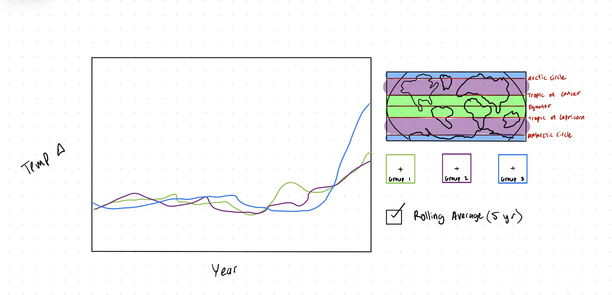

Global Warming Isn’t Fair: A Study of How Temperature Increases Affect Different Latitudinal Regions of the Globe
An Interactive Visualization to Explore How Global Warming Disproportionately Affects the North and South Pole
How to use this visualization:
The globe is divided into six horizontal latitude bands.
Click a band to cycle it through the three color-coded groups: Red (Group 1) →
Blue (Group 2) →
Green (Group 3) →
None.
Only grouped bands appear in the temperature-change chart.
Write-Up
Our interactive visualization allows the audience to explore how temperature (in degrees Celcius) increases
that have been observed since 1850 vary between different latitudes. Seeing that we wanted to compare
temperature changes over time, making a line plot was the most natural visual encoding that we could have
chosen because this allows us to present multiple lines corresponding to different groupings of latitudes and
creates a nice visualization where the audience can easily compare the change over time between groups.
The initial inspiration for this visualization actually came from a static line plot that plotted temperature
changes since 1850 for 3 different groups. The first group encompassed the two poles of the earth (defined as
anything greater than 60° or less than -60° latitude. The second group encompassed anything within 30° of the
equator either way, more specifically what we defined as the tropical region of the earth. The last group
included anything between the “tropical” region that we had defined and the two poles. What was so cool about
this line plot was that it showed how, beginning right around the year 2000, the temperature has increased at
a dramatically faster rate in the two poles compared to the rest of the globe. Also, there was a slightly more
subtle but equally as interesting discovery that we found in this plot, which showed how temperatures actually
dropped for a bit between 1940-70 because of the effects of aerosols.
With both of these findings answering some extremely important questions about the details of global warming,
we decided to design an interactive visualization that allowed the audience to come to this conclusion on their
own. The most intuitive implementation was to allow readers to group different sections of the globe into what
we defined as “latitude groupings”, and each time a grouping gets added or changed, the line plot adjusts
accordingly.
Because we wanted to encourage the audience to explore different groupings of latitude levels, the most natural
way to implement this in an interactive visualization was to include a 2-D map of the earth to one side of our
main line plot that is broken into 6 horizontal slices. The audience is able to iteratively click each slice to
change what grouping that slice is assigned to, and the line plot will adjust in real-time with each change made.
All 6 slices are initiated without any grouping, so we added some instructions to help guide the audience through
the process of selecting and de-selecting each slice. Additionally, there is a neat button right below this 2-D
globe that allows the user to deselect all slices and restart from scratch.
Also, in order to really enhance the experience and drive home the takeaways that we wanted to be made from this
visualization, we included a few annotations that appear only when the viewer has the slices of the globe grouped
in a particular manner. For example: when the slices are arranged so that the two poles are grouped together, the
two “tropical” slices closest to the equator are grouped together, and the remaining two slices are also grouped
together, a cool annotation will appear on the graph that explains how, after over 100 years of all 3 regions
following a largely similar trend, the poles have recently begun to experience warming temperatures at a rate
significantly higher than the rest of the globe.
As far as the development process goes, a lot of work went into brainstorming ideas, adding creative designs,
and ultimately building the final product. To start, all four team members participated in creating preliminary
visualizations (both static and interactive) to help brainstorm ideas for what our final product could look like.
Despite some intriguing alternative ideas, we ultimately decided to pursue this visualization as our final product.
From there, once we had collectively decided on a visualization to focus on, each team member took some time to
brainstorm some creative design elements that could be implemented to make the interaction and also the overall
viewing experience better for this graph. After coming together to discuss everyone’s opinions and ideas, we
settled on a list of features that we wanted to add to our visualization and began implementing them in practice.
Before getting into the code itself, however, we actually decided to draw out a rough draft of what we thought
our visualization might look like. Although the final product looks quite different from this rough draft, it was
very useful to help guide us along in the design process. This picture can be seen below.

From there, some team members participated in writing the code that turns our simple line plot into an interactive
playground while others helped create this write-up. In the end, this project took roughly 5-10 hours per person to
complete, with the majority of the work being put into the planning and brainstorming phases.